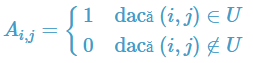

Terminologie
Definiție: Se numeşte graf orientat sau digraf o pereche ordonată de mulțimi notată G = (V, U), unde:
- V este o mulțime finită şi nevidă ale cărei elemente se numesc noduri sau vârfuri
- U este o mulțime de perechi ordonate de elemente distincte din V ale cărei elemente se numesc arce.
Exemplu:
 |
|
Observăm că arcele (1, 6) și (6, 1) sunt distincte.
Noțiuni
- extremități ale unui arc: pentru arcul u = (x, y), se numesc extremități ale sale nodurile x şi y
- x se numeşte extremitate inițială
- y se numeşte extremitate finală
- y se numește succesor al lui x
- x se numește predecesor al lui y.
- vârfuri adiacente: dacă într-un graf există arcul u = (x, y) (sau u = (y, x), sau amândouă), se spune despre nodurile x şi y că sunt adiacente
- incidență:
- dacă u1 şi u2 sunt două arce ale aceluiaşi graf, se numesc incidente dacă au o extremitate comună. Exemplu: u1 = (x, y) şi u2 = (y, z) sunt incidente
- dacă u1 = (x, y) este un arc într-un graf, se spune despre el şi nodul x, sau nodul y, că sunt incidente.
Grade
Definiție: Fie G = (V, U) un graf orientat și x un nod al său.
- Se numeşte grad exterior al nodului x, numărul arcelor de forma (x, y) (adică numărul arcelor care ies din x), notat d+(x).
- Se numeşte grad interior al nodului x, numărul arcelor de forma (y, x) (adică numărul arcelor care intră în x), notat d-(x).
Exemplu:
|
Pentru graful dat avem:
|
Teoremă: Într-un graf orientat, suma gradelor exterioare a tuturor nodurilor este egală cu suma gradelor interioare a tuturor nodurilor și cu numărul de arce.
Un nod x se numește izolat dacă d+(x) = d-(x) = 0 (are gradul interior și gradul exterior egal cu 0).
Matricea de adiacență
Fie G = (V, U) un graf orientat cu n noduri, în care nu există mai multe arce de la un nod la altul. Matricea de adiacență a grafului este o matrice cu n linii și n coloane și elemente 0 sau 1, astfel:
|  |
|
 |
Observații:
- matricea de adiacență are zerouri pe diagonală (dacă în graf nu avem bucle)
- matricea de adiacență nu este simetrică față de diagonala principală
Lista de arce
Lista de arce a unui graf orientat reprezintă o mulțime (familie, dacă arcele se pot repeta) ce conține toate arcele din graf.
Pentru graful alăturat, lista de arce este:
Pentru reprezentarea în memorie putem folosi:
- un tablou unidimensional cu elemente de tip struct {int I, J;}
- două tablouri unidimensionale cu elemente de tip int
- o listă alocată dinamic
- etc
Listele de adiacență
Pentru un graf orientat cu G = (V, U) se va memora numărul de noduri n și apoi, pentru fiecare nod x, lista succesorilor lui x, adică nodurilor y cu proprietatea că există arcul (x, y).
Pentru graful alăturat, listele de adiacență sunt:
1: 6 2: 1 4 3: 2 4: 2 5: 4 6: 1 2 4
La reprezentarea în memorie trebui avut în vedere că dimensiunile listelor de succesori sunt variabile. De aceea, este neeficientă utilizarea unor tablouri alocate static. Astfel, putem folosi:
- un șir de n tablouri unidimensionale alocate dinamic
- un șir de n vectori din STL
- un șir de n liste simplu (dublu) înlănțuite alocate dinamic.
Graf parțial
Definiție: Fie G = (V, U) un graf orientat. Se numeşte graf parțial al grafului G, graful orientat G1 = (V, U1), unde U1 ⊆ U.
Din definiție rezultă:
- Un graf parțial al unui graf orientat G = (V, U), are aceeaşi mulțime de vârfuri ca şi G, iar mulțimea arcelor este o submulțime a lui U sau chiar U.
- Fie G = (V, U) un graf orientat. Un graf parțial al grafului G, se obține păstrând vârfurile şi eliminând eventual nişte arce (se pot elimina şi toate arcele sau chiar nici unul).
Exemplu:

S-au eliminat arcele (1, 6), (3, 2), (6, 4)
Subgraf
Definiție: Fie G = (V, U) un graf orientat. Se numeşte subgraf al grafului G graful orientat G1 = (V1, U1) unde V1 ⊆ V iar U1 conține toate arcele din U care au extremitățile în V1.
Din definiție rezultă:
- Fie G = (V, U) un graf orientat. Un subgraf al grafului G, se obține ştergând eventual anumite vârfuri şi odată cu acestea şi arcele care le admit ca extremitate (nu se pot şterge toate vârfurile deoarece s-ar obține un graf cu mulțimea vârfurilor vidă).
Exemplu:

S-a eliminat nodul 6 și toate arcele incidente cu el.
Graf complet
Definiție: Fie G = (V, U) un graf orientat. Graful G se numește graf complet dacă oricare două vârfuri distincte ale sale sunt adiacente.
Două vârfuri x și y sunt adiacente dacă:
- între ele există arcul (x, y), sau
- între ele există arcul (y, x), sau
- între ele există arcele (x, y) şi (y, x).
Exemplu:
 |
|
Teoremă: Numărul de grafuri orientate complete cu n noduri este |
Graf turneu
Definiție: Un graf orientat este turneu, dacă oricare ar fi două vârfuri i şi j, i ≠ j, între ele există un singur arc: arcul (i, j) sau arcul (j, i).
Exemplu:
 |
| Proprietăți: |
|
Lanț. Drum
Definiție: Fie G = (V, U) un graf orientat. Se numește lanț, în graful G, o succesiune de arce, notată L = ( u1, u2, ... uk ) cu proprietatea ca oricare două arce consecutive au o extremitate comună (nu are importanță orientarea arcelor).
Lungimea unui lanț este egală cu numărul de arce din care este alcătuit.
Primul nod și ultimul nod dintr-un lanț formează extremitățile lanțului.
Definiție: Fie G = (V, U) un graf orientat. Se numește drum în graful G o succesiune de noduri, notată D = ( x1, x2, ... xk ), cu proprietatea că pentru orice 1 ≤ i < k, (xi, xi + 1) este arc în G.
Lungimea unui drum este egală cu numărul de arce din care este alcătuit.
Pentru un drum D = ( x1, x2, ... xk ), nodurile x1 și xk reprezintă extremitățile: inițială, respectiv finală.
Un lanț (drum) se numește elementar dacă în el nu se repetă noduri.
Un lanț (drum) se numește simplu dacă în el nu se repetă arce.
Exemple:
În graful alăturat:
L = (5, 4, 2, 6, 1) este un lanț elementar, dar nu este drum.
D = (3, 2, 1, 6, 4) este drum elementar.
D = (3, 2, 1, 6, 2, 4) este drum neelementar, dar simplu.
Circuit
Definiție: Se numește circuit un drum simplu în care extremitatea inițială și finală sunt egale. Se numește circuit elementar un circuit în care, cu excepția extremităților, nu se repetă noduri.
Lungimea unui circuit este reprezentată de numărul de arce din care acesta este alcătuit.
Exemple:
În graful alăturat: (1, 6, 2, 1) și (1, 6, 4, 2, 1) sunt circuite elementare.
Conexitate. Tare conexitate
Definiție: Fie G = (V, U) un graf orientat. Graful se numește tare conex dacă între oricare două noduri distincte există cel puțin un drum.
Definiție: Fie G = (V, U) un graf orientat. Se numește componentă tare conexă un subgraf tare conex și maximal cu această calitate (dacă am mai adauga un nod, n-ar mai fi tare conex).
Exemplu:

Graful de mai sus nu este tare conex. El conține trei componente tare conexe:
- 1 3 4
- 2
- 5 6 7 8
Observație: Un nod al grafului face parte dintr-o singură componentă tare conexă. Dacă ar face parte din două componente tare conexe, ele s-ar reuni prin intermediul acelui nod.
Graf hamiltonian
Definiții: Fie un graf orientat G = (V, U).
Un drum elementar care conține toate nodurile grafului se numește drum hamiltonian.
Un circuit elementar care conține toate nodurile grafului se numește circuit hamiltonian.
Un graf care conține un circuit hamiltonian se numește graf hamiltonian.
Exemplu: Graful orientat de mai jos este hamiltonian
 |
Graf eulerian
Definiții: Fie un graf orientat G = (V, U).
Un drum care conține toate arcele grafului se numește drum eulerian.
Un circuit care conține toate arcele grafului se numește circuit eulerian.
Un graf care conține un circuit eulerian se numește graf eulerian.
Teoremă: Un graf fără noduri izolate este eulerian dacă și numai dacă este conex și pentru fiecare nod, gradul interior este egal cu cel exterior.
Exemplu: Graful orientat de mai jos este eulerian.
 |
Graf transpus
Definiție: Fie G = (V, E) un graf orientat. Se numește graf transpus al lui G graful orientat GT = (V, ET), cu aceleași mulțimea a nodurilor și pentru orice pereche de noduri are loc: (x, y) este arc în G dacă și numai dacă (y, x) este arc în GT.